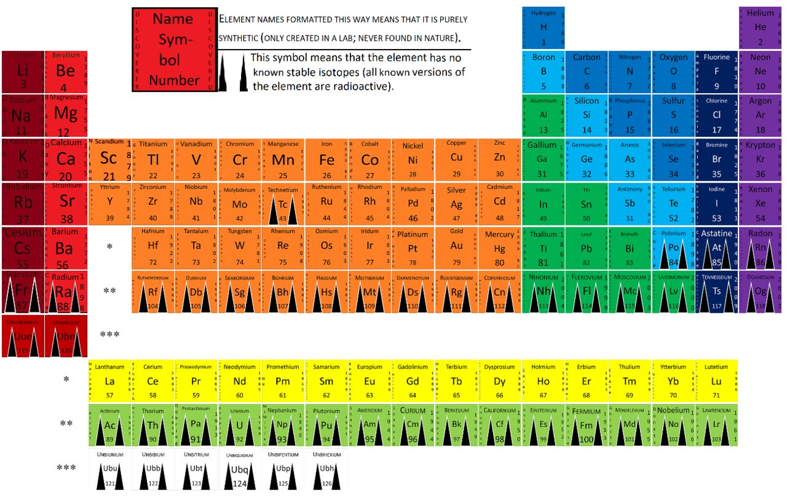
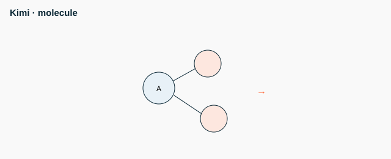

<h1>Chemistry - senior - M3 - Kinetics and acid-base</h1>
<figure class="photo"></figure>


<ul>
<li>Rate increases with temperature and concentration</li>
<li>Rate law: v = k[A]^n</li>
<li>First order: half-life t1/2 = 0.693/k</li>
<li>Strong acid dissociates completely</li>
<li data-aoi="kritike" data-critical="true">pH + pOH = 14 (25 C)</li>
</ul>
